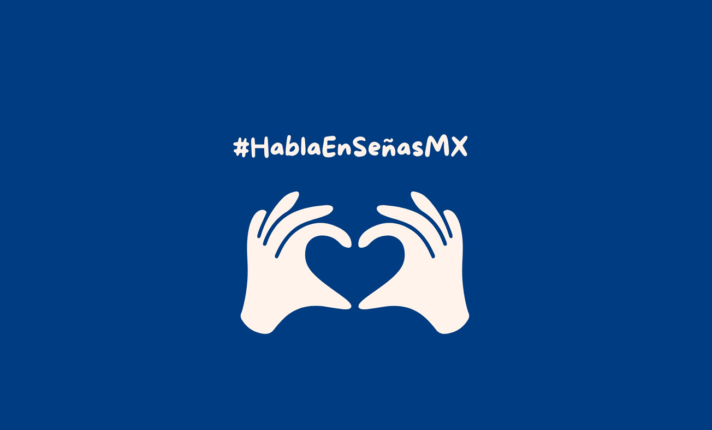

Contenido informativo actualizado
Voz en Señas
Descubre el lenguaje que une corazones y rompe barreras de comunicación en México. Una plataforma diseñada para la inclusión total.
Descubrimiento
Información Extra


Impacto y Soluciones Reales
Construimos puentes. Nuestra iniciativa está centrada en la concienciación constante y el respeto a la cultura sorda.
diversity_3
Inclusión Real
Fomentamos espacios donde todos puedan comunicarse sin barreras.
visibility
Conciencia Visual
Contenido diseñado para sensibilizar sobre la importancia de la comunicación visual.
public
Red de Apoyo
Únete a una red global de personas interesadas en la inclusión.